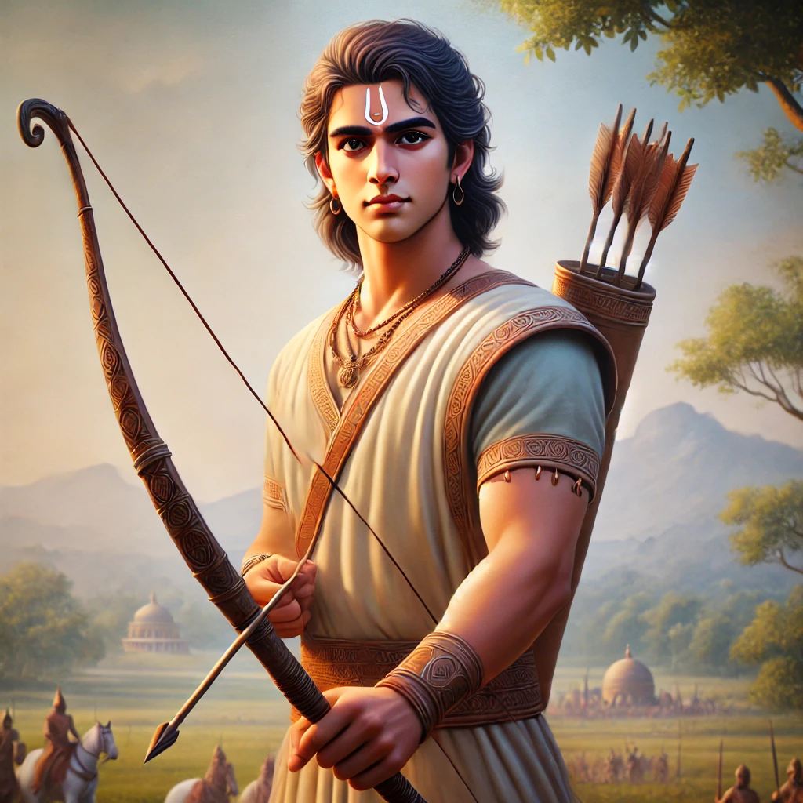

Yudhishthira, the eldest of the Pandava brothers in the Mahabharata, is
widely respected for his unwavering commitment to dharma
(righteousness), truth, and justice. Born to Kunti through the divine
blessing of Dharma (Yama), the god of righteousness, Yudhishthira was
destined to embody moral principles. From a young age, he exhibited a
calm, composed, and thoughtful nature, always prioritizing ethical
conduct over personal gain. As the rightful heir to the throne of
Hastinapura, Yudhishthira was well-versed in statecraft, diplomacy, and
governance under the tutelage of elders like Bhishma, Drona, and Vidura.
His sense of justice earned him the title Ajatashatru (one who has no
enemies), as he maintained peace and harmony in his relationships
despite the challenges posed by the Kauravas. One of the defining
moments in Yudhishthira's life came during the infamous dice game with
Duryodhana, where he was manipulated by Shakuni into wagering and losing
his kingdom, his wealth, his brothers, and even his wife Draupadi.
Despite knowing the risks, Yudhishthira felt obligated to honor the
challenge as a Kshatriya and lost everything, leading to the Pandavas'
exile for 13 years. His adherence to dharma, even in the face of grave
consequences, became both his strength and his flaw. Yudhishthira’s
sense of duty and fairness was evident when, after losing Draupadi in
the dice game, he did not oppose the consequences, despite her
humiliation, out of his respect for the rules of the game.
Bhima
Bhima, the second Pandava brother in the Mahabharata, is known for his
immense physical strength, fierce loyalty, and protective nature towards
his family. Born to Kunti through the blessings of the wind god Vayu,
Bhima’s superhuman strength becomes evident from a young age, and he
grows into a formidable warrior. He is particularly close to his elder
brother, Yudhishthira, and younger brother, Arjuna, often serving as the
protector of the Pandavas in times of danger. Bhima's relationship with
his cousins, the Kauravas, is marked by enmity, especially with
Duryodhana, who harbors jealousy and hatred towards Bhima due to his
strength and influence. From early childhood, Bhima’s physical prowess
intimidates the Kauravas, and Duryodhana attempts multiple times to
eliminate him, most notably by poisoning him and trying to drown him in
the Ganges. Throughout the epic, Bhima’s bravery and ferocity are
demonstrated in various battles, particularly during the Pandavas’
exile. His hunger for justice and revenge is most evident in his promise
to Draupadi after her humiliation in the Kaurava court. Bhima vows to
kill Dushasana and drink his blood for dragging Draupadi by her hair,
and to break Duryodhana’s thigh, which he insulted her with during the
dice game. Bhima’s strength is also a key asset during the Pandavas'
time in exile, where he defeats numerous powerful demons, including
Hidimba, whom he kills before marrying her sister, Hidimbi, with whom he
has a son, Ghatotkacha.
Arjuna

Arjuna, the third Pandava brother in the Mahabharata, is celebrated as
one of the greatest warriors and archers in Indian mythology. Born to
Kunti through the blessings of the king of gods, Indra, Arjuna inherited
divine qualities, particularly his unparalleled skill in archery. From a
young age, Arjuna displayed an intense dedication to his craft,
receiving extensive training under Drona, the Pandavas' teacher. His
discipline and focus made him the most favored disciple of Drona, and
his archery skills surpassed everyone, even his cousins, the Kauravas.
One of his earliest accomplishments was winning the hand of Draupadi in
a swayamvara by successfully completing an impossible archery challenge,
thus making him one of her five husbands. Arjuna’s life is marked by
several key moments of valor, adventure, and divine encounters. He won
numerous powerful weapons through his devotion to the gods, including
the Pashupatastra from Lord Shiva and the Gandiva bow from the fire god
Agni. Arjuna's journey also includes several divine experiences, most
notably his ascension to Indraloka (heaven), where he spent time with
the gods and gained more divine knowledge. He played a significant role
during the Pandavas' 13-year exile, particularly during the one-year
incognito period, where he disguised himself as a dance teacher named
Brihannala in the kingdom of Virata. When the kingdom was attacked by
the Kauravas, Arjuna revealed his identity and single-handedly defeated
their army, showcasing his superior warrior skills.
Nakula
Nakula, the fourth Pandava brother in the Mahabharata, is known for his
exceptional beauty, mastery of swordsmanship, and unparalleled skills
with horses. Born to Madri, the second wife of Pandu, Nakula and his
twin brother Sahadeva were fathered by the Ashwini twins, the celestial
physicians. As a result, Nakula inherited their divine qualities,
particularly his physical grace and expertise in medicine and healing.
Despite being quieter and more reserved compared to his elder brothers,
Nakula stood out for his loyalty, humility, and sense of duty. He was
highly skilled in wielding the sword and in handling horses, earning a
reputation as the best horseman among the Pandavas. Nakula's loyalty to
his brothers, especially Yudhishthira, is a defining aspect of his
character. When the Pandavas were exiled after the infamous dice game,
Nakula, along with his brothers, accepted their fate without protest,
fully committed to supporting Yudhishthira in all circumstances. During
their time in exile, Nakula’s skills were invaluable, particularly in
maintaining their horses and ensuring their physical well-being. He was
not only a warrior but also a caretaker of the Pandavas' health, using
his knowledge of medicine and healing. His expertise in managing horses
became crucial during their incognito exile, where he disguised himself
as a horse caretaker named Granthika in the kingdom of Virata.
Sahadeva’s role in the Kurukshetra War was primarily as a strategist and
warrior, although his contributions were often overshadowed by his more
prominent brothers.
Sahadeva
Sahadeva, the youngest of the five Pandava brothers in the Mahabharata,
is renowned for his wisdom, astrological knowledge, and loyalty to his
family. Like his twin brother, Nakula, Sahadeva was born to Madri
through the divine intervention of the Ashwini twins, the celestial
physicians. Sahadeva was known for his intellect and keen sense of
strategy, often regarded as the wisest among the Pandavas. His deep
understanding of astrology gave him insights into future events,
although he kept this knowledge hidden, adhering to a vow of silence.
Despite his quiet and reserved nature, Sahadeva was a vital part of the
Pandavas' journey, always by their side in times of need. During the
Pandavas’ exile following their defeat in the dice game, Sahadeva
remained a steadfast supporter of Yudhishthira, demonstrating his
unwavering loyalty. While in exile, Sahadeva’s skills were invaluable,
as he used his knowledge of medicine and herbs to aid his brothers and
Draupadi. He also showcased his administrative skills during the final
year of exile when the Pandavas lived in disguise in King Virata’s
court. Disguised as a cowherd named Tantipala, Sahadeva managed the
cattle, excelling in the task as he had inherited knowledge of animal
husbandry from his celestial lineage. Though not as physically imposing
as Bhima or as famous as Arjuna, Sahadeva’s quiet dedication and
humility made him a crucial support for his brothers. During the
Pandavas' exile, Yudhishthira demonstrated remarkable patience and
wisdom.